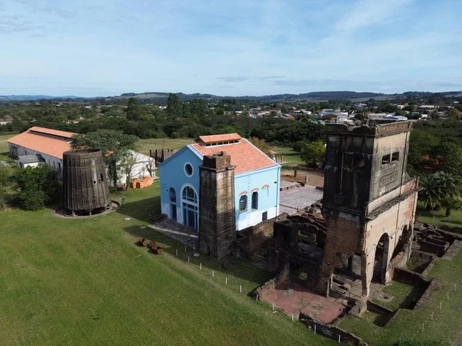

Exposição
Exposição
Cartas do Fundo do Poço
A exposição reconstrói a história da mineração no Rio Grande do Sul através de cartas e documentos originais (1891-1964) do Arquivo Histórico do Museu Estadual do Carvão.
Exposição
A exposição reconstrói a história da mineração no Rio Grande do Sul através de cartas e documentos originais (1891-1964) do Arquivo Histórico do Museu Estadual do Carvão.
 Educação
Educação
Ações educativas integradas com escolas da região do Jacuí, promovendo visitas guiadas e oficinas didáticas sobre a história da mineração e preservação ambiental.

PreservaçãoTrabalho contínuo de conservação preventiva, higienização e restauro físico de documentos cartográficos e manuscritos raros do fundo documental CADEM.